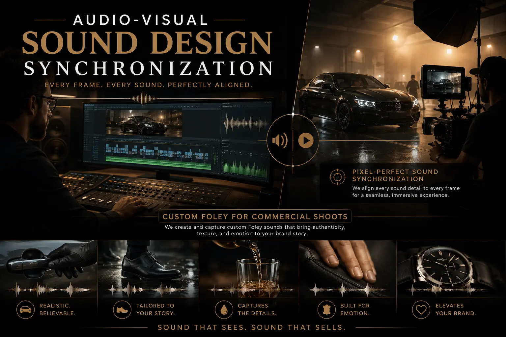
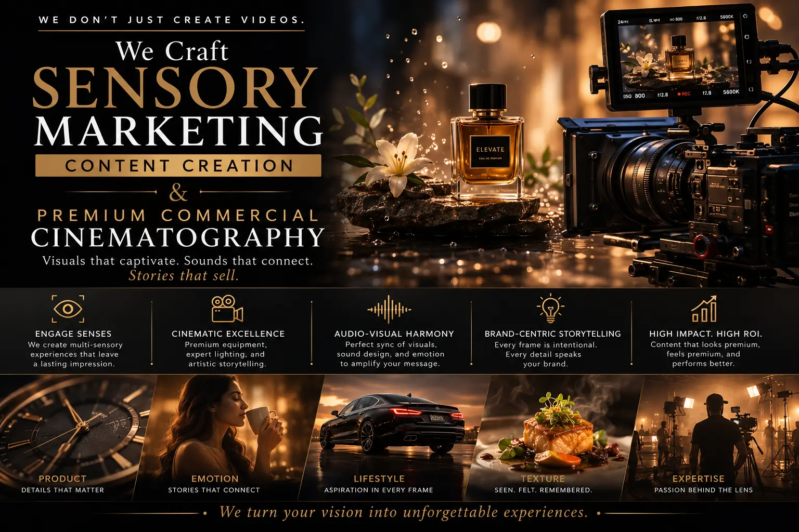

Why Ambient Audio Design is the Unsung Hero of High-End Brand Promotional Videos
The Invisible Layer That Separates Premium from Generic
When you watch a luxury brand commercial — a perfume reveal, a premium watch close-up, a high-fashion collection trailer — and feel an involuntary physical response, a tingle of desire, a sense of being drawn into the screen, the visual cinematography is only half the equation. The other half — the half that most viewers never consciously identify — is the ambient audio design: the precisely engineered soundscape of surface textures, spatial atmospheres, material interactions, and environmental tones that wraps around the visual content and transforms it from something you watch into something you experience.
In the production of high-end Brand Promotion Videos, ambient audio design is the single most underinvested element — and simultaneously the element with the highest return on production quality perception. A beautifully shot product video with generic stock music and no ambient sound layer registers as competent. The same video with a custom-designed ambient sound layer — the whisper of silk against skin, the precise click of a magnetic closure, the deep resonance of a ceramic surface — registers as premium. The difference is not subtle; it is the difference between a viewer scrolling past and a viewer pausing, watching to the end, and remembering.
This is the discipline of Audio-Visual Sound Design Synchronization applied to commercial production — the technical and creative craft of designing, recording, and synchronising ambient sound layers that align frame-by-frame with visual content to produce an immersive, multi-sensory brand experience.
Why Standard Audio Approaches Fall Short
Most commercial video productions rely on a two-layer audio model: a music track and a voiceover. While these elements serve important narrative and emotional functions, they leave the sensory environment of the video empty. The result is content that tells the viewer about the product but does not make the viewer feel the product. Premium Commercial Cinematography demands a more sophisticated audio architecture:
- Music alone cannot create immersion. Background music establishes mood and pacing, but it operates at a general emotional level — it makes the viewer feel happy, excited, or contemplative without connecting those feelings to specific on-screen actions or product attributes. Ambient audio creates specific, localised sensory connections between sound and image.
- Stock sound effects lack precision. Generic library sound effects are recorded in isolation and rarely match the specific visual context of your footage. The timing is approximate, the tonal character is generic, and the spatial quality is inconsistent — all of which the viewer's subconscious detects as artificial, even if they cannot articulate why.
- Silence registers as emptiness, not minimalism. When a brand video contains visual action without corresponding sound — a hand touching a product, a box being opened, a garment being unfolded — the absence of sound creates an unconscious sense of emptiness that reduces perceived production quality and product desirability.
- Audio-visual desynchronisation breaks trust. Even minor misalignment between a visual action and its corresponding sound effect — a click that arrives 100 milliseconds late, a pour that begins before the visual — triggers the viewer's instinctive "something is wrong" response, reducing trust in the content and the brand.
Tactile Audio Immersion
Creating tactile audio-visual clips — where every on-screen material interaction has a precisely matched sound — transforms product videos from visual demonstrations into multi-sensory experiences that drive desire.
Custom Foley Production
Investing in custom Foley for commercial shoots means recording bespoke sound effects that are timed, toned, and textured specifically for your footage — eliminating the artificiality of generic library effects.
Sensory Marketing Impact
Applying sensory marketing content creation principles — activating sight and hearing simultaneously to evoke touch and materiality — significantly increases product desirability and purchase intent.
High-Impact Sound Effects
Layering High-impact video sound effects beneath your primary audio tracks — impacts, transitions, ambient textures — adds cinematic weight that elevates perceived production value.

The Technical Workflow: Recording, Designing, and Synchronising Ambient Audio
Building a professional ambient audio layer for Brand Promotion Videos requires a structured workflow that runs in parallel with the visual production pipeline:
- Step 1: Identify every material interaction in the visual edit. Before any sound is recorded or designed, the sound designer watches the locked visual edit and creates a detailed cue sheet — a frame-by-frame log of every on-screen action that requires a corresponding sound: hands touching surfaces, products being placed, mechanisms operating, fabrics moving, liquids pouring, packaging opening.
- Step 2: Record custom Foley for all primary interactions. In a controlled studio environment, a Foley artist performs each identified action using materials that match the on-screen products — or materials that produce a more desirable sonic character. A silk scarf may be recorded with actual silk, but a leather bag closure may be enhanced with a heavier, more resonant material to increase the perceived quality of the sound. Every Foley recording is synced to the visual edit in real time.
- Step 3: Design ambient environmental layers. Beyond specific object interactions, the sound designer creates atmospheric layers — room tones, spatial reverberations, and environmental textures — that place the visual content in a specific acoustic environment. A luxury showroom scene requires a different ambient character than a studio close-up or an outdoor lifestyle shot.
- Step 4: Mix and synchronise all layers. The final mix balances music, voiceover, Foley, ambient layers, and transition effects into a cohesive audio master. Every sound element is precisely frame-aligned with its corresponding visual, and the relative volumes are calibrated so that ambient layers enhance immersion without competing with primary audio elements.
- Step 5: Test across playback environments. The finished mix is tested on studio monitors, laptop speakers, smartphone speakers, and headphones — the actual devices through which the target audience will experience the content. Mobile playback is particularly critical, as compression and small speaker drivers can dramatically alter how ambient layers are perceived.
Application Across Commercial Formats
Ambient audio design applies across the full spectrum of commercial video formats — and the production approach must be adapted to each format's unique constraints and opportunities:
Product Launch and Hero Videos
- Full ambient soundscapes with custom Foley for every product interaction and material close-up.
- Spatial audio design that creates a sense of physical depth — sounds positioned in the stereo or surround field to match on-screen spatial relationships.
- Signature brand sound elements — a specific closure click, a distinctive pour texture — that become audio brand identifiers across campaigns.
- Dynamic audio transitions that mirror visual cuts and camera movements, maintaining immersive continuity.
Social Media Short-Form Content
- Compressed ambient layers optimised for mobile playback through small speakers and earbuds.
- Exaggerated Foley textures that cut through the noise of a social feed — louder, crisper, more satisfying versions of real-world sounds.
- ASMR-influenced audio design for product unboxing, texture close-ups, and material demonstrations that leverage the proven engagement power of tactile audio.
- Audio hooks in the first 1-2 seconds — a distinctive sound that captures attention before the visual content fully registers.
Corporate Identity and Brand Films
- Subtle, sophisticated ambient layers that reinforce the brand's tonal character — warmth, precision, innovation, heritage — without drawing conscious attention.
- Environmental soundscapes for office, factory, and workspace footage that create authenticity and presence without adding noise or distraction.
- Branded transition sounds and section markers that create a cohesive audio architecture across longer-form corporate identity films.
- Executive speech enhancement — room tone matching, breath reduction, and presence EQ — that makes spoken content sound authoritative and natural.
Finding the Right Production Partner
Ambient audio design requires specialised skills and equipment that most general-purpose video production studios do not maintain in-house. When seeking a video production company near me for premium brand video content, evaluate their audio production capabilities as rigorously as their visual capabilities — ask to hear their Foley recording samples, review their mixing studio setup, and assess whether they integrate sound design into their production workflow from the start rather than treating it as a post-production afterthought.
The most effective production partnerships are those where visual and audio design are planned together from the pre-production stage — ensuring that camera angles, lighting setups, and product choreography are designed with sound capture and sound design in mind from the outset.

Conclusion
Ambient audio design is the invisible differentiator that separates premium Brand Promotion Videos from generic commercial content. Through disciplined Audio-Visual Sound Design Synchronization, custom Foley for commercial shoots, and sensory marketing content creation, brands can transform their video assets from visual demonstrations into immersive, multi-sensory experiences that drive emotional engagement, product desire, and purchase intent.
The investment required is a fraction of the total production budget — but the impact on perceived quality, viewer retention, and brand recall is disproportionately large. Premium Commercial Cinematography without premium audio design is like a luxury product in generic packaging — technically adequate, but missing the sensory layer that communicates value.
At The PhD Ads, we integrate ambient audio design into every stage of our video production workflow — from High-impact video sound effects and tactile audio-visual clips to full Foley recording sessions and immersive soundscape design for corporate identity films and brand campaigns.
Key Topics
Add a Premium Audio Layer to Your Brand Videos
At The PhD Ads, we design and produce ambient audio layers, custom Foley, and immersive soundscapes that transform your brand videos from visually strong to sensorially unforgettable.
Email: team@e2o.in